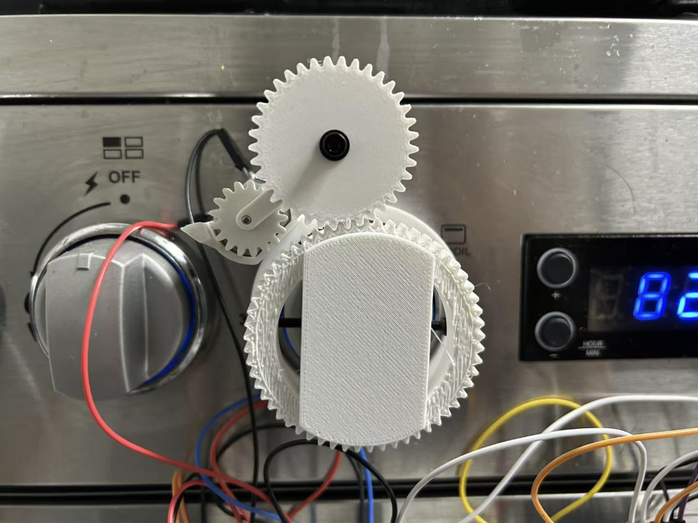

IOT-Connected Stove Safety Device
Unattended cooking remains one of the leading causes of residential fires and energy waste. While electric stoves reduce the open-flame risk, any heating element left on after the chef has walked away can ignite nearby objects or simply simmer for hours, wasting power. Commercial “smart stoves” address this, but their high price—and the need to replace an entire appliance—keeps them out of reach for many households. This system is divided into two functional hubs, sensing and actuation, linked by a lightweight, wireless channel(ESP_NOW). At the sensing hub, each hub is powered by a 3.7 V Li-ion cell and an ESP32 running MicroPython. An HC-SR04 ultrasonic module mounted at apron height continuously measures the distance to the cook. Whenever the reading stays below 130 cm the hub considers the stove “attended” and resets its absence timer. The temperature sensor tracks for high heat to ensure there is a fire to turn off. If surface temperature is below 35 °C, the hub remains silent. Simmering pots that have already cooled pose no risk. If the burner is hotter than 35 °C and the absence timer reaches 20 minutes, the hub frames a 32-byte alert containing its unique ID, a time-stamp, and the latest temperature reading, then broadcasts the packet over ESP-NOW.
The actuation hub listens for those packets through a third ESP32 whose Wi-Fi hardware is configured as a passive peer; no router or internet connection is required. On receipt of an alert, the node verifies that the message is fresh (sequence number ahead of the previous one) and that the temperature field is still above threshold, guarding against radio ghosts or out-of-order frames. If the criteria pass, the node issues three actions in quick succession. First, it drives a piezo buzzer at 2 kHz and flashes a 5 mm red LED to warn anyone nearby that the stove is about to be shut down. After a five-second grace interval it energises a 5 V geared DC motor coupled to the stove’s control knob through what’s effectively a 3-D-printed clutch. After it runs for a set amount of time, the motor stops and the sensor will go into a reset timer. During that time it will not turn back on to allow the temperature sensor to cool off and have accurate readings again.